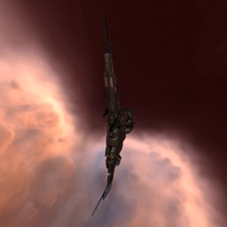

Tornado

Тип корабля: Линейный крейсер
Государство/Организация: Minmatar
Примерная стоимость: 71.500.000 ISK
Описание
В 113 году по юлайскому летоисчислению Служба Безопасности Республики получила сведения о том, что Амаррская Империя создаёт новый линейный крейсер, способный вести огонь из крупнокалиберных орудий. Считая отставание от главного врага недопустимым, Флот Республики выдал консорциуму «Свобода творчества» задание на постройку соответствующего корабля.
Результатом стараний инженеров стал линейный крейсер типа «Торнадо». Проект «Торнадо» был разработан в кратчайшие сроки при соблюдении строжайшей секретности; он являет собой настоящий памятник инженерному гению матарцев, сумевших приспособить конструкцию древних атмосферных бомбардировщиков к реалиям боев в космосе. Козырная карта «Торнадо» — это сочетание маленького радиуса сигнатуры с большим количеством точек для установки крупнокалиберных орудийных установок.
Характеристики
Корпус
Запас прочности корпуса: 1.800 ед.
Вместимость грузового отсека: 535 м^3
Объем отсека для дронов: -
Пропускная способность канала телеуправления: -
Масса: 15.228.000 кг
Занимает объем: 216.000,0 м^3 (15.000,0 м^3 в разобранном виде)
Влияние инертности конструкции: 0,475x
Сопротивление корпуса ЭМ-урону: 33 %
Сопротивление корпуса термальному урону: 33 %
Сопротивление корпуса кинетическому урону: 33 %
Сопротивление корпуса фугасному урону: 33 %
Броня
Запас прочности брони: 1.800 ед.
Сопротивление брони ЭМ-урону: 60 %
Сопротивление брони термальному урону: 35 %
Сопротивление брони кинетическому урону: 25 %
Сопротивление брони фугасному урону: 10 %
Щит
Запас прочности щита: 1.890 ед.
Влияние на время регенерации щитов: 23 минут и 20 секунд
Сопротивление щита ЭМ-урону: 0 %
Сопротивление щита термальному урону: 20 %
Сопротивление щита кинетическому урону: 40 %
Сопротивление щита фугасному урону: 50 %
Сопротивление средствам РЭП
Сопротивление накопителя нейтрализирующему воздействию: 0 %
Сопротивление воздействию генератору стазис-поля: 0 %
Сопротивление воздействию помех на наводку вооружения: 0 %
Накопитель энергии
Емкость накопителя: 2.700,0 ГДж
Время востановления заряда: 11 минут и 15 секунд
Целеуказания
Максимальная дальность захвата цели: 60 км
Максимальное количество захваченных целей: 6
Радиус сигнатуры: 195 м
Разрешающая способность систем захвата цели: 230 мм
Эффективность радарной системы: -
Эффективность магнитнометрической системы: -
Эффективность гравиметрической системы: -
Эффективность ладарной системы: 17 ед.
Двигательная установка
Максимальная скорость: 225 м/с
Скорость в варп-режиме: 3,5 а.е./с.
Служба оснащения
Мощность ЦПУ: 342,0 Тф
Мощность реактора: 1.000 МВт
Калибровка: 400 ед.
Точки монтажа орудийных установок: 8
Точки монтажа пусковых установок: -
Разъемы большой мощности: 8
Разъемы средней мощности: 5
Разъемы малой мощности: 4
Разъемы под установку тюнинг-модулей: 3